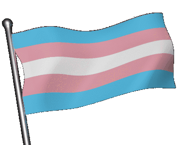
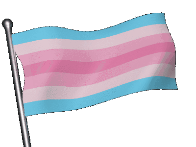
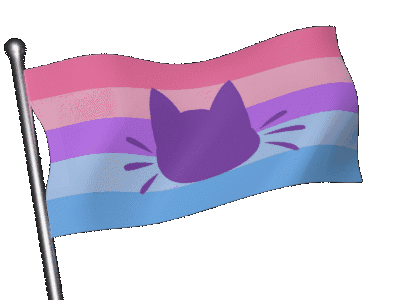
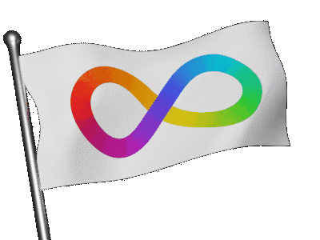

Main Blog
Welcome to Baisylia's blog!
I've divided the blog into sections, with this being the main one where I blog about any random
thoughts I may have. These blogs are undated because I edit them over time when my thoughts change.





YouTube Inspirations
In the last few of years I've been exploring the person that I am and who I want to be;
how I'm percieved, how I precieve myself, my aesthetic, the things I create, etc.
Creativity strikes from the influences around you, an as someone who is usually online
I am often inspired by online creators.
The following is an unordered list of YouTube channels that have inspired me in some way.
Hopefully none of them turn out to be terrible awful people but some likely will. :p
Xploshi
Astrid Ztar
Zack Freedman
TomSka & Friends
Slimecicle
Emma Thorne
owiebrainhurts
FilmCow
jacknjellify
Kane Pixels
carykh
mysticat
Ted Nivison
YukkoEX
PixelzwithaZ
TodePond
binguschondo
Tom Cardy
Noodle
exurb1a
FairyPrincessLucy
Minecraft Lore
According to Jeb's Minecraft design book, Minecraft is a multiverse. Every world has its own lore that
is decided by the player. This is great, Minecraft is a game driven by the player's imagination after
all, but it is clear that Mojang has its own lore in mind as well, as that's how the creative process works.
I like to think of their intended lore as the prime timeline, the true Minecraft world in the Minecraft
multiverse. This prime world consists of all the lore set in the base game, as well as Minecraft Dungeons
(MCD), and even Minecraft Legends (MCL).
There is a case to be made that MCL is just a story told by villagers, but just like how MCD was the reason
illagers were added to the base game, Mojang had MCL in mind when adding piglins to the base game. Whether
or not all of MCL is completely factual, it is clear that it is at least based on their intentions for the
prime timeline.
The lore of the prime timeline is actually more set in stone than you may think at first, as the spinoff
games are full of confirmed pieces of lore information, and Minecraft itself is full of small lore details.
The following is lore that is inarguably confirmed, strongly assumed, and educatedly theorised.
Confirmed by Media:
- MCL takes place before the base game
- Desert temples were made by necromancers
- Piglins mined out all of the pure netherite
- There are 3 deities that live in their own plane of existence
- Prismarine is from the deity plane
- The deities converted some of the villagers into the first illagers
- The ender is a physical being and their life force resides within the heart of ender
- The heart of ender has been used by both piglins and illagers
- Villagers are peaceful beings and never fight
- Endermen have a form of sentience
- Ghasts are living creatures
- Sculk consumes and is powered by souls
- Soul sand contains souls
- Sniffers are extinct dinosaurs
- Being killed by the undead can convert you to being undead
- Zombification can be cured in some cases
- Piglins are scared of zombification and soul light
- Hoglins are scared of warped fungi and nether portals
- Piglins require a spore-filled atmosphere to avoid becoming zombified
- End portals are made out of endstone
- Fire frees souls from soul sand but not sculk
Assumptions of Media:
- MCD takes place after the base game
- Vexes are corrupted allays
- Illagers visited ancient cities
- Ocean monuments were built by the deities
- Guardians, elder guardians, blazes, wildfires, and breeze are all golems
- The centre monuments in ancient cities are portals
- Players can respawn in-canon because of the deities
- Slimes can be adapted to other environments by combining their slimy essence with other materials such as blaze powder
- Ghast tears have regenerative properties
- Gold has enhancement properties
- Some of the fossil structures are relatives of sniffers
- Withering is stronger than regular zombification
- Yellow allays are no longer present in the overworld
- Elytras come from a bug of some sort
- Trail ruins are from the MCL time period
My Most Probable Headcanons:
- The ender is a fallen deity
- Players are isekai-ed into the game
- End cities act as shulker farms
- Experience is literal knowledge essence
- Ravagers were once villagers
- Slimes were made by witches
- Witches are former clerics and created igloos
Pet Peeves
I have many pet peeves, things that really grind my gears for both petty and moral reasons.
The following is an unorganised list of things that aggravate me.
- When people act as though I should share my meal because it is a food that is usually shared, even though I'm eating it as my main meal
- When people then say we can get another meal if I'm not full after sharing my meal
- 'Culinary vegetables', tomatoes are fruits not vegetables, I don't care how they are used in cooking
- The opinion of quantity over quality being better
- Streaming services being the main way to access any media
- People sucking crumbs off their fingers
- When people ask when a mod will be updated to [x version]
- People being far too early when I was prepared to be ready on time
- People being far too late and I got ready for nothing
- Asking if something extremely specific is planned for a project instead of just suggesting a feature
- Tone indicators, as someone on the spectrum, especially /hj which is the stupidest thing to ever be invented
- 'Straight invalidation'
- Some specific words and phrases such as 'apple pie' evoke discomfort within me for some reason
- Christmas celebration in November or even October
- Subtle forshadowing memes
- When my hands are slightly sticky or grimy from using a keyboard or mouse
- When the only existing figurine of a character is a funko pop, so then I have to get a funko pop if I want a figure of that character
- The frequency of the
Dunning-Sanches
effect within every environment and community
- Discord, Unity, Spotify, Twitter, IOS, Android, and Google being the way they are
- People disliking they/them for themselves or others
- Mario Party
- People being anti-self diagnosis for things like autism
- Every third influencer turning out to be a peice of shit
- AI being incorporated into everything, not everything needs ChatGPT integration